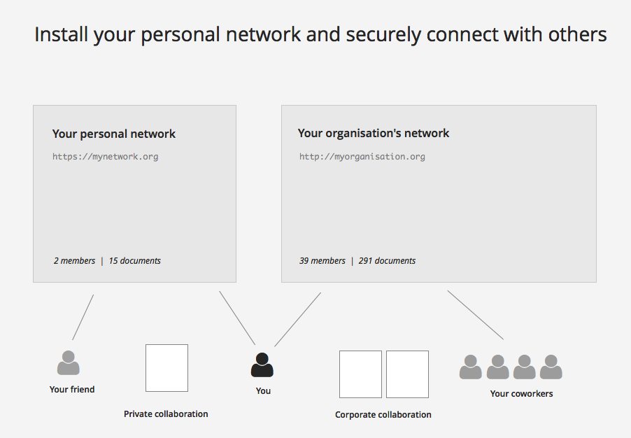
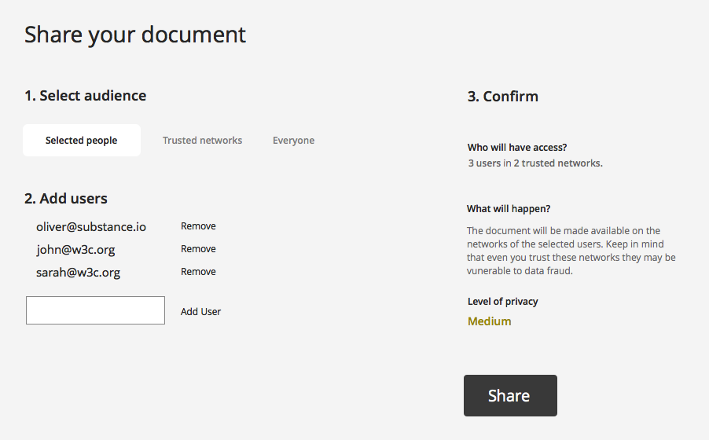
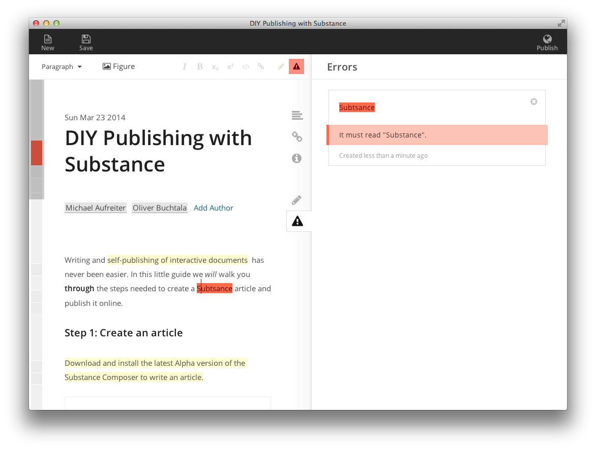

Mon Mar 31 2014
Centrally managed proprietary systems are dominating the Internet. People are no longer in control of their content, which is resulting in privacy violations, data fraud and censorship. According to the original idea of the internet, people have their own space for expression on the web. The web should function as a democratic medium. We want to take this idea further and develop the Substance Network, a personal space tailored for self-expression on the web. We want to help people reclaim the internet as an open space. With Substance, an open technology stack for web-based document manipulation, we developed a technical foundation supporting that idea.
Following Tim Berners-Lee's original idea, the internet should be open to everyone, be decentralized by nature, and provide a means for painless, democratized collaboration and sharing. In an interview recently published on wired.co.uk he emphasizes the threat of for-profit internet monopolies and a 'balkanisation' of the web. He demands a re-decentralisation.
In the spirit of these ideas, we want to establish a fair and easy way of self-publishing on the web. Everyone should be able to express their ideas, and respond to the ideas of others in a democratic way.
It's not that there aren't any platforms for collaborative document creation available yet. Unfortunately, these platforms are proprietary and centralised, and do not respect the privacy of users. Private data is exploited for commercial purpose, and even worse it's vulnerable to fraud and abuse.
We want to give back control to the users. Individuals, as well as organisations, should be able to establish their own collaboration hubs and distribution channels, making it a personal document editing and sharing network. Such a system removes the technical hurdles, so anyone can create and share documents on their own.

Architecture of connected Substance Networks
In addition to the general idea of openness we are convinced that privacy as a human right must be protected. Users should be able to collaborate with each other in a secure way (using encryption) until they decide to share their documents with the world.

Privacy-aware sharing of documents
We want to strengthen the vision of a democratic internet by realizing it as a decentralized system. Users define who is allowed to access their content, since it's their responsibility. Moreover, mirroring of published data helps to overcome censorship.
With Substance we are providing a technical foundation for solving these problems. It is a purely browser-based solution for document creation, ready to be integrated into various publication scenarios. We developed the Substance Composer, a web-based editing environment and eLife Lens an interactive display for scientific literature. Now we want to complement our solution with a decentralized hub for collaboration.

The Substance Composer
Substance Network brings self-expression in terms of modern web-publishing to the user, respecting desires for content ownership, privacy and security, and fostering the genuine idea of the internet as a decentralized space for open, collaborative, and democratic expression and discussion. We'd like to witness a society that conquers back the internet as a free medium.
We are searching for supporters of that idea, in order to shape it and turn it into a reality soon. If you like our proposal please help us by sharing this document with friends and talking about the issues described. We are very open to any kind of collaboration. Please get in touch with us at info@substance.io to share your thoughts or make a donation to the project.
Thank you for your support,
Michael and Oliver
Update: We pitched our idea to the Knight News Challenge. You can add comments and applaude the propsal.
Authors


Supplements
You can download and edit this article in the Substance Composer.
Copyright
Copyright © 2014 Michael Aufreiter, Oliver Buchtala
This article is distributed under the terms of the Creative Commons Attribution License, which permits unrestricted use and redistribution provided that the original author and source are credited.
See Creative Commons Attribution.